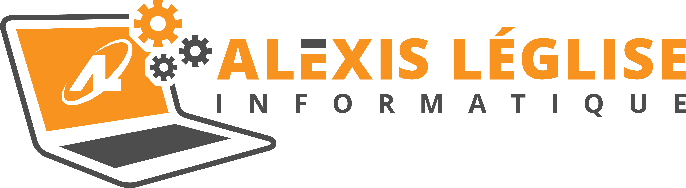
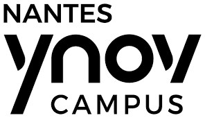

Présentation de la SARL Alexis Leglise Informatique, qui m'accueille en stagiaire de fin juin à fin juillet 2023. La société est une SARL fondée par Alexis Léglise. Elle propose des prestations d'achat de matériel neuf ou d'occasion, de réparation de matériel ou de création de chantier. L'entreprise compte actuellement deux salariés, Alexis en tant que PDG et Aurélien en tant que nouveau suppléant. L'ambiance y est très détendue et je peux dire que ce stage a été une très bonne expérience.
Travailler chez McDonald's en tant qu'étudiant a été une expérience enrichissante pour plusieurs raisons :
En résumé, travailler chez McDonald's en tant qu'étudiant a été une expérience enrichissante qui m'a permis d'acquérir des compétences professionnelles précieuses tout en offrant la flexibilité nécessaire pour concilier travail et études. De plus, les avantages offerts par l'entreprise et les opportunités d'avancement en font une option attrayante.

L'école que j'étudierai à partir de septembre 2021 est le campus de Nantynov. L'école a une approche par projet dans le but de nous familiariser avec les méthodes de travail de l'entreprise. Cette méthode est très efficace. J'ai acquis de nombreuses compétences au cours des deux dernières années Les projets « Ydays » en sont un exemple, car ils permettent de s'immerger pour la première fois dans le monde professionnel. De plus, les opportunités de stages et d alternance travail-études sont des opportunités précieuses.